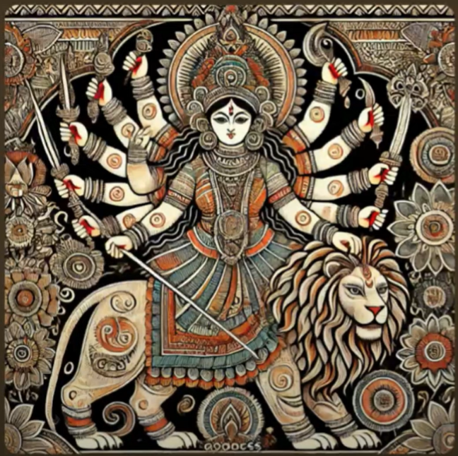

ಅರ್ಗಲಾ ಸ್ತೋತ್ರಂ (Argala Stotram)

ಪತ್ನೀಂ ಮನೋರಮಾಂ ದೇಹಿ ಮನೋವೃತ್ತಾನುಸಾರಿಣೀಂ |
ತಾರಿಣೀಂ ದುರ್ಗಸಂಸಾರ-ಸಾಗರಸ್ಯ ಕುಲೋದ್ಭವಾಂ ||
Patnīṁ manoramāṁ dēhi manōvṛttānusāriṇīm |
Tāriṇīṁ durgasaṁsārasāgarasya kulōdbhavām ||
பத்னீம் மனோரமாம் தேஹி மனோவ்ருத்தானுசாரிணீம் |
தாரிணீம் துர்கஸம்ஸாரசாகரஸ்ய குலோத்பவாம் ||
पत्नीं मनोरमां देहि मनोवृत्तानुसारिणीम् |
तारिणींदुर्गसंसारसागरस्य कुलोद्भवाम् ||
Chant this mantra daily for 41 days (one mandala), 108 times using a japa mala, before beginning bride search.
Source:
(Youtube Short)
Explanation by Chaganti Koteswara Rao Garu
Meaning
O Mother Durgā! Bless me with a wife
who delights my mind,
who acts in accordance with my nature,
who helps uplift and support me,
who enables me to cross the vast ocean of worldly existence,
and who is capable of giving birth to a son who uplifts the lineage.
Sankalpa
- Set a clear intention (e.g., to find a good life partner).
- Write and repeat it daily before chanting.
Daily Practice
- Time: Early morning (Brahma Muhurta, 4–6 AM).
- Cleanliness: Bathe and wear clean clothes.
- Altar: Place an image of Goddess Durga or Amman.
- Offerings: Light a lamp, offer flowers, incense, and food.
Japa Discipline
- Chant 108 times daily with a mala (rudraksha or tulsi).
- Be consistent — don’t skip days.
- Sit in the same place and direction (preferably east).
Completion
- On day 41, perform a special puja or homa if possible.
- On day 41 , perform a special puja or homa if possible.
- Thank the Goddess and release your intention.